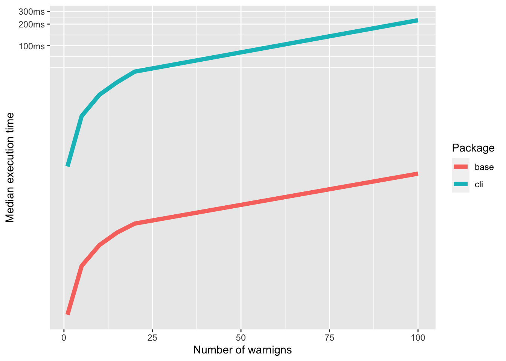

![]()
library(bench)
library(cli)
library(dplyr)
library(ggplot2)R package developers often have to take on dependencies for various reasons. Dependencies are external packages that provide extra functionalities or features to another package (Wickham and Bryan 2023). Quite often, the goal of taking on a dependency is to utilize its rich features and reduce duplicated coding effort. For example, the ggplot2 package is often adopted, instead of R’s inbuilt plotting functions, to make visualizations using its declarative system and implementation of the Grammar of Graphics, and slick automation across the board.
Sometimes, introducing a dependency might slow down existing processes. Hence, it is important to consider the speed of a dependency’s functions before adopting it. Code optimisation is often reserved for heavy processes like data processing steps. However, here, we will focus on lesser optimised processes, and in particular, printing of texts in R.
For this demonstration, we will look at a situation where a package developer is considering options for condition signalling beyond the functionalities provided in base R. Condition signalling refers to the process of communicating to a user that an issue has arisen during code execution (Wickham 2019).
Base R ships with functionalities for condition signalling. There is base::stop() for signalling errors. Errors refer to cases where something fatal happens during code execution so that it halts, for example, when a function is run without specifying the required arguments.
rnorm()Error in rnorm(): argument "n" is missing, with no defaultBase R provides base::warning() for throwing warnings. Warnings are used to handle less fatal issues with code execution that do not need to halt the process. For example, when you compare two vectors of different lengths, R will throw a warning but will still return a result.
c(1:2) > c(1:3)Warning in c(1:2) > c(1:3): longer object length is not a multiple of shorter
object length[1] FALSE FALSE FALSELastly, there is base::message() for throwing messages. Messages are used to provide useful information about processes. For example, packages throw messages about NAMESPACE conflicts when loaded. This is to inform the user so they know what next steps to take.
library(data.table)
Attaching package: 'data.table'The following objects are masked from 'package:dplyr':
between, first, lastThese base R functions are, however, not flexible enough for advanced formatting: colour, progress bar, contextual pluralisation, and so forth. The package developer might want to adopt external dependencies for these flexibilities. The cli package is well designed for this. cli offers many of the advanced formatting features. Here is a quick example (adopted from the help file) using cli::cli_abort(), the equivalent of base::stop().
n <- "c(1, 2, 3)"
cli_abort(
c(
"{.var n} must be a numeric vector",
"x" = "You've supplied a {.cls {class(n)}} vector."
)
)Error:
! `n` must be a numeric vector
✖ You've supplied a <character> vector.In this example, we used inline text formatting to print n as a variable and interpolated code to print the class of n in the error message and all in just 6 lines of code.
If this is enough to excite your interests, check out cli’s website and help files, which provide in-depth guides on its myriad features.
Now, considering all these amazing features that cli offers, what should a package developer consider to adopt it? In this article, we will demonstrate how to use (micro)benchmarking1 to guide the decision through the lense of speed. Benchmarking can be used to check whether adopting cli as a dependency would slow down existing printing processes in undesirable ways.
Here, we will benchmark cli::cli_warn() against base R’s base::warning() to see if the former has any speed issues. The results of this exercise will provide us with insights on whether its worth taking on cli for its features as a trade-off for slower printing speed.
Experiment
We will consider different scenarios of number of warnings thrown to tease out the relationship between speed of the function and number of warnings thrown in a function with and without cli::cli_warn(). We will also check how the benchmark scales with the number of warnings in the function.
Based on this description, we will need the following packages: cli for its warning function, and bench for measuring the run times, dplyr for manipulating the results, and ggplot2 for plotting.
Let’s define a function that takes an argument n for the number of warnings to throw and pkg for the type of package to use.
warn_Ntimes <- function(n, pkg) {
warning_msg <- "x must be an integer"
switch(pkg,
base = for (i in seq_len(n)) {
warning(warning_msg)
},
cli = for (i in seq_len(n)) {
cli_warn(warning_msg)
}
)
}Let’s test our function to see if it works as expected.
warn_Ntimes(3, "base")Warning in warn_Ntimes(3, "base"): x must be an integer
Warning in warn_Ntimes(3, "base"): x must be an integer
Warning in warn_Ntimes(3, "base"): x must be an integerwarn_Ntimes(3, "cli")Warning: x must be an integerWarning: x must be an integer
x must be an integerNow, we’ll consider scenarios where a function throws 1, 5, 10, 15, 20, and 100 warnings using base R and cli.
# Number of warnings to throw
warnings <- c(1, 5, 10, 15, 20, 100)Let’s run benchmarks over the different scenarios and store results in a data.frame.
bnmark_res <- press(
warnings = c(1, 5, 10, 15, 20, 100),
mark(
cli = warn_Ntimes(warnings, "cli"),
base = warn_Ntimes(warnings, "base")
)
)Results
It’s time to explore the results of the data generated. Let’s first make a boxplot of the run times for the different scenarios.
Drum roll please…
autoplot(
bnmark_res,
type = "boxplot"
) +
labs(
x = "Package",
caption = "Functions throwing various numbers of warnings as indicated in the facet label"
)Loading required namespace: tidyr
Now, let’s see how the benchmarks scale with the number of warnings thrown.
bnmark_res$pkg <- attr(bnmark_res$expression, "description")
ggplot(bnmark_res) +
geom_line(
aes(
x = warnings,
y = median,
color = pkg
),
linewidth = 2
) +
labs(
x = "Number of warnigns",
y = "Median execution time",
color = "Package"
)
As we can see, cli is consistently slower than base R for the same number of warnings thrown. The median times also follow a similar non-linear trajectory. Benchmarking experiments with other cli functions have revealed similar non-linear relationships between its speed and the number of times it invokes those functions 2. However, those exercises were not compared with equivalent functions in base R. The relative comparison here is useful for decision-making.
The developers of cli have also conducted benchmarks of the ansi_*() family of functions in cli in comparison to base R and the fansi package. They find that cli is consistently slower than base R, which corroborates the results of our experiment here. These benchmarks are available in the cli documentation 3.
So, should we be worried about the speed of cli? Well, it depends on the context. The “R Packages” book by Hadley Wickham and Jenny Bryan suggests approaching such a decision from a holistic, balanced, and quantitative approach(Wickham and Bryan 2023). We’ll leave the reader to make their own decision based on their use case.
Most developers might argue that this is an optimisation overkill4. However, it is important to consider speed differences in context. In the case of simple printing, the speed difference is negligible yet disruptive and somewhat painful. However, in the grand scheme of things, this might be nothing compared with much slower processes that need more attention. In those cases, the developer might want to consider other optimisation strategies such as profiling 5. The essence of this experiment is to demonstrate the utility of benchmarking in making quick design decisions.
Conclusion
In designing R package infrastructure with dependencies, it might sometimes be necessary to check if they don’t slow down existing processes. Here, we have demonstrated how benchmarking is one way to achieve this for a process involving condition signalling. We show how a simple decision to use cli::cli_warn() to handle warnings could come at the cost of a tiny loss in speed, which is worth considering in its context.
The demonstration here can be extended to other dependency adoption decisions for input checking, loops, object manipulations, and so forth. We recommend benchmarking as a way to help developers make quick design decisions. However, we also recommend that developers consider the context of the optimisation in interpreting the results.
I would like to thank Pratik Gupte, Joshua Lambert, and Hugo Gruson for their invaluable reviews and suggestions that helped improve this post.
Other R packages for benchmarking
- microbenchmark: an R package for comparing the execution time of R expressions.
- rbenchmark: an R package for benchmarking R code.
- tictok: an R package to time R functions
- touchstone: an R package for benchmarking of pull requests with statistical confidence.
References
Wickham, Hadley. 2019. Advanced r. CRC press.
Wickham, Hadley, and Jennifer Bryan. 2023. R Packages. " O’Reilly Media, Inc.".
Footnotes
Benchmark (Wikipedia): https://en.wikipedia.org/wiki/Benchmark_(computing)↩︎
Formating errors can be slow/variable: https://github.com/r-lib/cli/issues/617↩︎
cli benchmarks: https://cli.r-lib.org/articles/ansi-benchmark.html↩︎
Donald Knuth’s quoted as having said, “The real problem is that programmers have spent far too much time worrying about efficiency in the wrong places and at the wrong times; premature optimization is the root of all evil (or at least most of it) in programming.” (See https://en.wikiquote.org/wiki/Donald_Knuth)↩︎
Profiling (Wikipedia): https://csgillespie.github.io/efficientR/performance.html↩︎
Reuse
Citation
BibTeX citation:
@online{mba_azam2023,
author = {Mba Azam, James},
title = {Using Benchmarking to Guide the Adoption of Dependencies in
{R} Packages},
date = {2023-11-22},
url = {https://epiverse-trace.github.io/posts/benchmarking_design_decisions/},
langid = {en}
}
For attribution, please cite this work as:
Mba Azam, James. 2023. “Using Benchmarking to Guide the Adoption
of Dependencies in R Packages.” November 22, 2023. https://epiverse-trace.github.io/posts/benchmarking_design_decisions/.